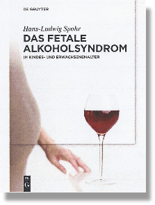
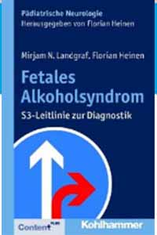

Literaturempfehlung
|  | DAS FETALE ALKOHOLSYNDROM Autor: Hans-Ludwig Spohr XXIV, 331 Seite, 92 Abb. 100 Tab. Gebunden: € 79,95 [D] / *US$ 112,- ISBN: 978-3-11-044328-8 2. Auflage 2016 eBook: Unberb. Ladenpreis € 79,95 / *US$ 112,- ISBN 978-3-11-028789-6 Erschienen: 12/2013 Publikationssprache: Deutsch Fachgebiete: Medizin > Gynokologie, Geburtshilfe, Perinatologie |
Weitere Literatur zum Thema FASD
| Alcohol, pregnancy ISBN-10: 0521564263 |
||
| Alkohol in der Schwangerschaft
ISBN 13: 978-3-89935-221-1 |
||
|  | Leitlinien fetales Alkoholsyndrom (Heinen, Landgraf) ISBN-10: 3170234447 |
|
| Ratgeber FASD ISBN-10: 3824808889 |
||
| Dokument: CRIMINAL JUSTICE SYSTEM als PDF | ||
| Dokument: Fetal Alcohol Spectrum Disorder and The Youth Criminal Justice als PDF |